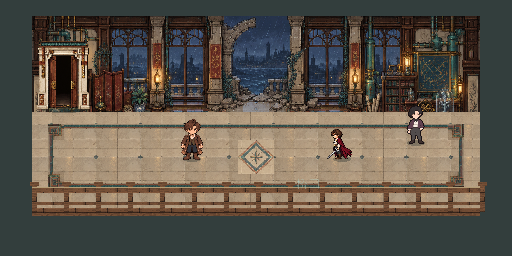
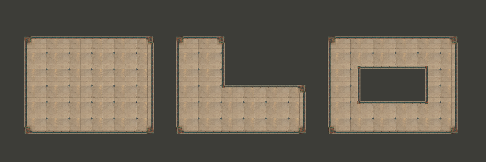

目标与来源
目标是保留原稿青灰／赭红双线、回纹转角和单独中心纹样，并让边饰随格子布局自动连接。原图整体建筑、人物和构图没有在本轮重建。

原稿1536×1024；外角裁切[269,399,329,459]，内角接头裁切[269,399,293,423]，横边[370,960,430,980]，竖边[269,450,289,510]。自动图集格120px，显示为32px。原适配器48形表的两个孤立块邻接重复，发布47种唯一邻接。
本轮将现役诗人画廊的固定四边装饰替换为自动邻接包边。源像素来自 Astra 已有画廊原稿，只执行显式裁切、90°旋转及拼接；底面与独立中心菱纹继续使用原场景采样。没有生成法线、AO或改动碰撞。
目标是保留原稿青灰／赭红双线、回纹转角和单独中心纹样，并让边饰随格子布局自动连接。原图整体建筑、人物和构图没有在本轮重建。
原稿1536×1024；外角裁切[269,399,329,459]，内角接头裁切[269,399,293,423]，横边[370,960,430,980]，竖边[269,450,289,510]。自动图集格120px，显示为32px。原适配器48形表的两个孤立块邻接重复，发布47种唯一邻接。

实际SubViewport 512×256，网页按2倍最近邻展示。包边范围(48,204)–(464,268)，13×2格。中心菱纹仍只出现一次；南栏、人和家具仍使用原舞台遮挡及脚点。观察中修正了旧裁切带入无关像素、内角亮色方块和半格偏移。

从左到右为矩形、L形及带孔区域，均调用Godot set_cells_terrain_connect(..., false)。边条连续，外角与内角随布局选择；带孔区域的空洞保留。此图是有限结构样片，不是新游戏地图。
Godot 4.6.1、OpenGL Compatibility、RTX 3070完成当前轮导入与渲染；本轮运行返回0，导入与运行日志未出现ERROR/SCRIPT ERROR。当前日志仍有既有侦探资源UID失效后按路径加载的警告，以及退出时ObjectDB实例泄漏警告；本轮没有将关闭完整性评为通过。
原稿的烘焙光照、砖缝间距差异及底面重复色差仍可见，转角裁片的局部底色也与邻接采样略有差别。小尺寸舞台的纹样经过显示缩放，不能等同于原图全分辨率细节。未测试其他章节、正式会话、角色移动与碰撞交互，未启动Core AI。